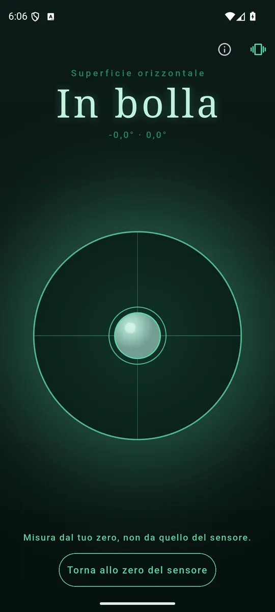
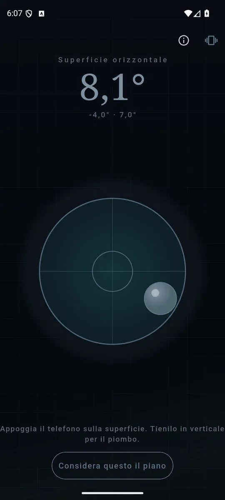
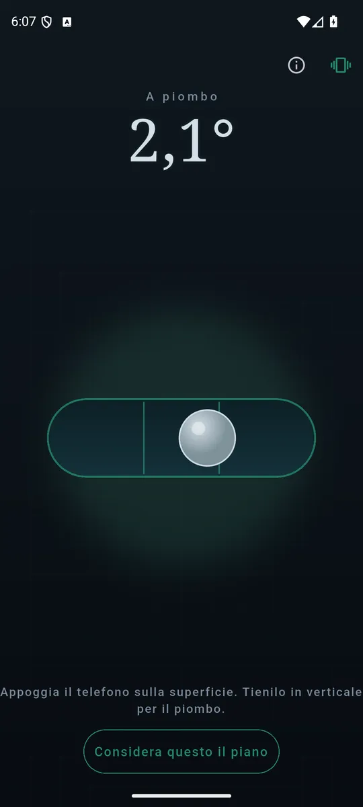

ItalianoEnglish
Si apre e la bolla è già lì. Appoggia il telefono su un piano e si muove in due assi, come su una livella a occhio di bue; tienilo in verticale contro uno stipite e diventa un filo a piombo. Non c'è un pulsante per cambiare, perché la gravità dice già come stai tenendo il telefono.

Dentro la tolleranza il numero diventa una parola. 
Due assi, non un numero solo: dicono quale lato alzare. 
In verticale diventa un filo a piombo, senza cambiare nulla.
Cosa fa
- L'inclinazione in gradi, due assi separati. Non un numero solo: due, perché quello che vuoi sapere è quale lato alzare.
- Dentro la tolleranza il numero diventa una parola. «In bolla», e basta: è quella la risposta per cui hai aperto l'app, non 0,08°.
- Due battiti quando arrivi, uno secco quando esci. Una mensola si livella con gli occhi sulla mensola, non sul telefono.
- Azzeramento. Appoggia il telefono su un piano che sai dritto e digli di considerarlo tale — il tavolo storto smette di essere un problema. Si annulla quando vuoi.
- In italiano e in inglese, secondo la lingua del telefono.
0,3°, e non uno zero compiacente
La tolleranza entro cui Level dice «in bolla» è 0,3 gradi: è quella di una livella a bolla vera da 60 cm, non un numero scelto per far sembrare dritto tutto quello che gli metti sotto. Una soglia più larga regalerebbe soddisfazione e mensole storte; una più stretta trasformerebbe il rumore dell'accelerometro in un verdetto che cambia mentre lo guardi.
Quando il sensore non c'è, lo dice
Su un dispositivo senza accelerometro Level lo dichiara apertamente, invece di mostrare una bolla ferma al centro che sembra una risposta e non lo è.
I tuoi dati restano tuoi
La misura è l'accelerometro e basta: niente posizione, niente rete, niente account, e le letture non escono dal dispositivo. I permessi sono due — Internet, che serve agli annunci, e la vibrazione del feedback aptico.
Come si paga
Con un banner in fondo, lontano dai comandi, e un interstiziale saltuario solo dopo che hai ottenuto la bolla. Nessun abbonamento, nessuna funzione tenuta in ostaggio.
Dove trovarla
Non è ancora su Google Play. Quando ci sarà, il collegamento comparirà qui.